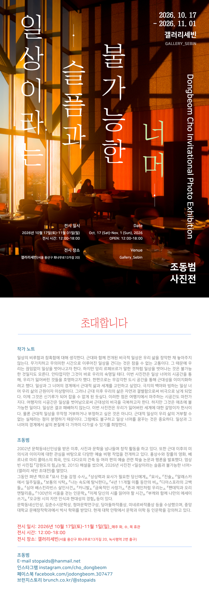
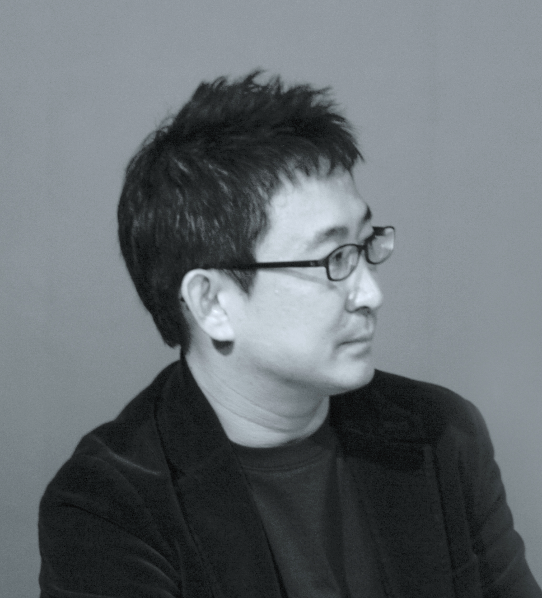

PHOTOGRAPHY · INVITATIONAL EXHIBITION
조동범 사진전
일상이라는
슬픔과 불가능한
너머
2026. 10. 17 — 11. 01
12:00–18:00 · 매주 화·수·목 휴관
전시 보러 오시는 길 ↗
ABOUT THE EXHIBITION
익숙한 일상에서,
낯선 감각을 발견하는 시간.
조동범은 일상의 비루함과 참혹함을 생각하며, 익숙한 삶의 경계 너머를 사진으로 바라봅니다. 반복되는 일상 안에서 쉽게 지나쳤던 장면과 감각을 마주하는 전시입니다.
“일상과 그 너머의 경계에서 근대적 삶과 세계를 고민하고 싶었다.
극지의 백야와 빙하는 일상 너머 우리 삶의 근원이자 이상향이다.”— 조동범, 작가 노트 중
작가 노트 전문 읽기
일상의 비루함과 참혹함에 대해 생각한다. 근대와 함께 전개된 비극적 일상은 우리 삶을 장악한 채 놓아주지 않는다. 무가치하고 무의미한 시간으로 이루어진 일상을 견디는 것은 참을 수 없는 고통이다. 그 때문에 우리는 끊임없이 일상을 벗어나고자 한다. 하지만 앙리 르페브르가 말한 것처럼 일상을 벗어나는 것은 불가능한 것일지도 모른다. 안타깝지만 그것이 바로 우리의 숙명일 테다. 이번 사진전은 일상 너머의 시공간을 통해, 우리가 잃어버린 것들을 호명하고자 했다. 한편으로는 무감각한 도시 공간을 통해 근대성을 이미지화하려고 했다. 일상과 그 너머의 경계에서 근대적 삶과 세계를 고민하고 싶었다. 극지의 백야와 빙하는 일상 너머 우리 삶의 근원이자 이상향이다. 그러나 근대 이후 우리의 삶은 자연과 결별함으로써 비극으로 남게 되었다. 이제 그것은 신기루가 되어 잡을 수 없게 된 듯싶다. 이러한 점은 여행지에서 마주하는 시공간도 마찬가지다. 여행자의 시공간은 일상을 벗어남으로써 근대성의 비극을 극복하고자 한다. 하지만 그것은 애초에 불가능한 일이다. 일상은 결코 패배하지 않는다. 이번 사진전은 우리가 잃어버린 세계에 대한 갈망이자 헌사이다. 물론 근대적 일상을 무작정 거부하거나 부정하고 싶은 것은 아니다. 근대적 일상이 우리 삶의 거부할 수 없는 실체라는 점이 분명하기 때문이다. 그럼에도 불구하고 일상 너머를 꿈꾸는 것은 중요하다. 일상과 그 너머의 경계에서 삶의 본질에 더 가까이 다가설 수 있기를 희망한다.
EXHIBITED WORKS
THE ARTIST

조동범 Dongbeom Cho
2002년 문학동네 신인상을 받은 이후, 사진과 문학을 넘나들며 창작 활동을 하고 있습니다. 엄상빈 사진집 『강원도의 힘』(2015)의 해설을 썼으며, 2026년 갤러리 세빈에서 사진전 《일상이라는 슬픔과 불가능한 너머》를 엽니다.
EXHIBITION PROGRAMS
전시와 함께하는 시간
오프닝 리셉션, 도시 답사와 미학 강의가 전시 기간 중 진행됩니다. 아래 시간은 프로그램별 일정이며 일반 관람시간과 다릅니다.
오프닝 리셉션
15:00 · 40명 내외
핑거푸드 및 와인 준비 예정이태원 답사
11:00–13:00 · 20명
안양작가회의·일반인 참여
13:00 답사팀과 함께 갤러리 도착미학 강의 — 사진과 시
11:00–13:00 · 20명
명동부터 해방촌까지 답사
11:00–13:00 · 20명
문화지평
13:00 답사팀과 함께 갤러리 도착미학 강의 — 현대성과 일상 그리고 예술
11:00–13:00 · 20명
일요일 작가 상주
10월 18일 · 10월 25일 · 11월 1일
상주 시간은 별도 안내 예정입니다.
소규모 시창작 강의
10월 19일(월) 또는 10월 26일(월) 중 하루
14:00–16:00 · 4명
PLAN YOUR VISIT
갤러리 세빈에서
만나요.
- 전시 기간
- 2026년 10월 17일(토)–11월 1일(일)
- 관람 시간
- 12:00–18:00
매주 화·수·목 휴관 - 전시 장소
- 갤러리 세빈
서울 용산구 회나무로13가길 20 - 대중교통
- 녹사평역 2번 출구
초대장에 안내된 출구입니다.
CONTACT & INQUIRIES
전시에 관해
문의해 주세요.
관람, 프로그램, 작품에 관한 문의를 남겨 주세요. 답변을 위해 연락처를 남길 수 있으며, 연락처는 공개되지 않습니다.
공개 문의 기록
공개에 동의한 문의만 표시됩니다.
문의 기록을 불러오는 중입니다.